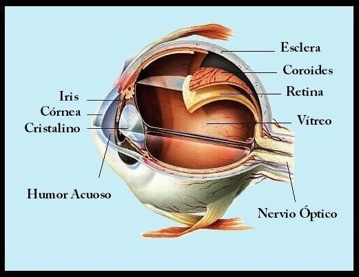
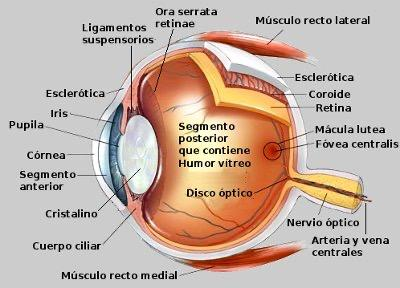
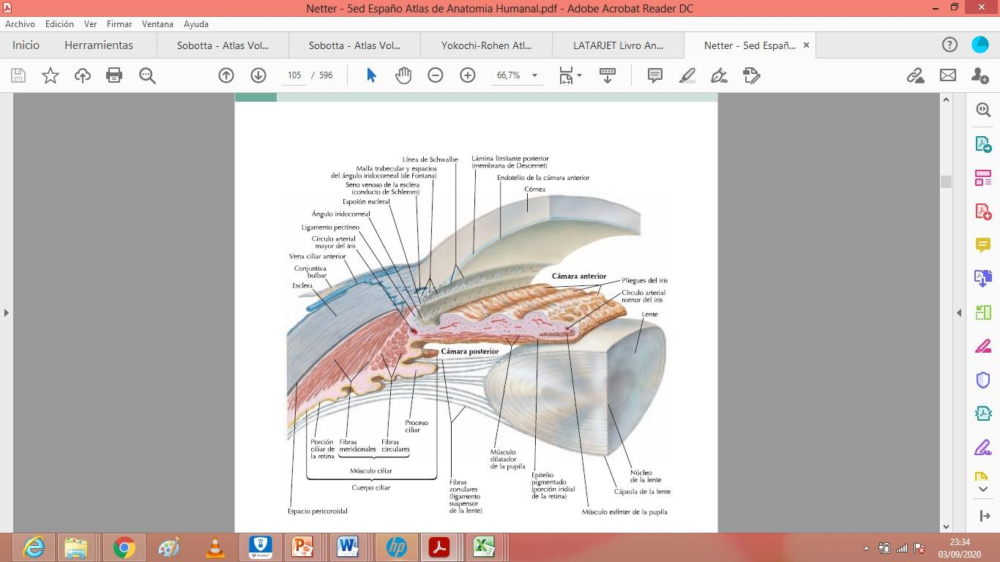
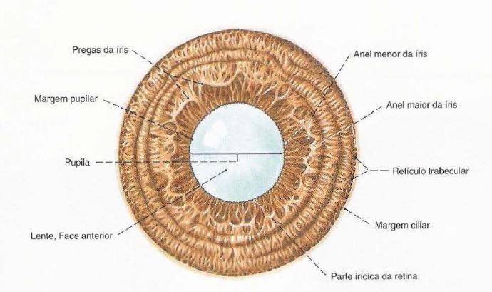
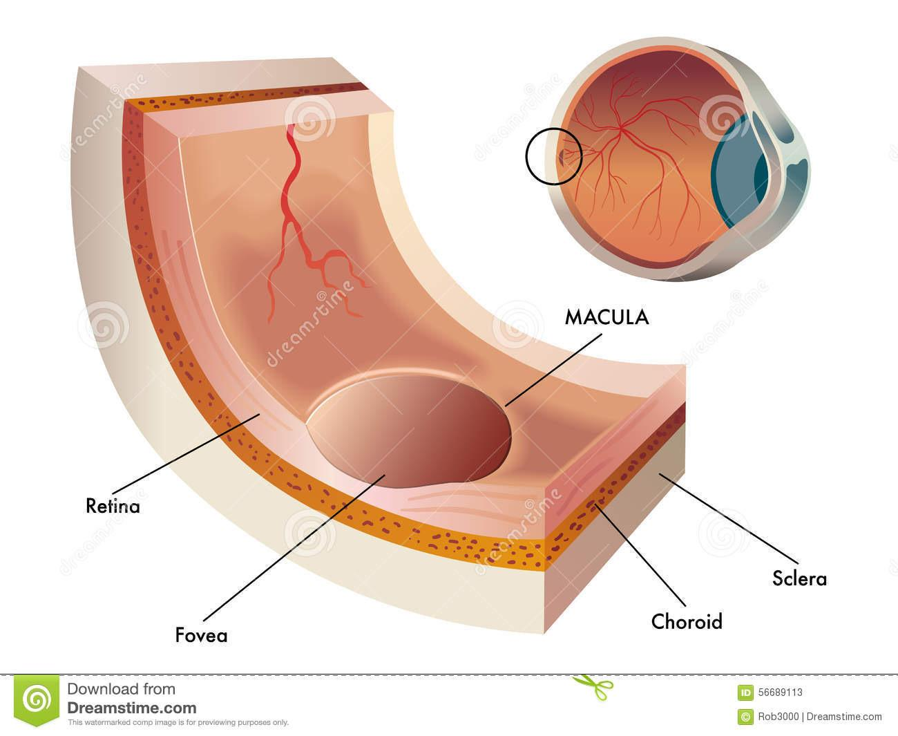
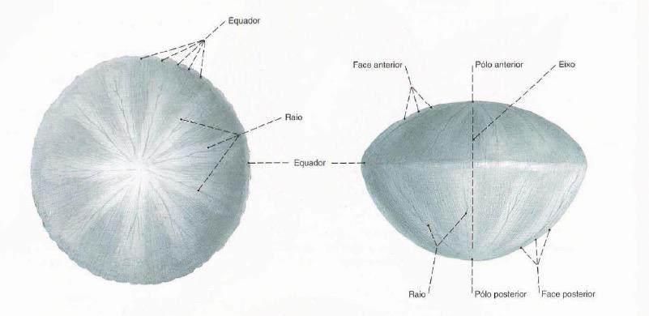
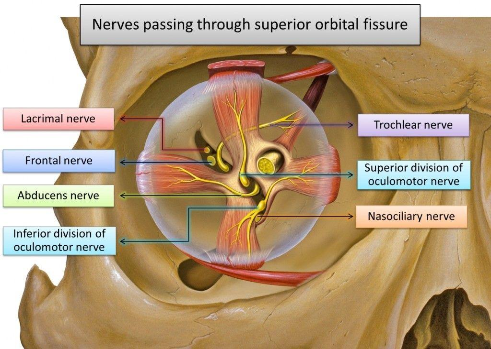
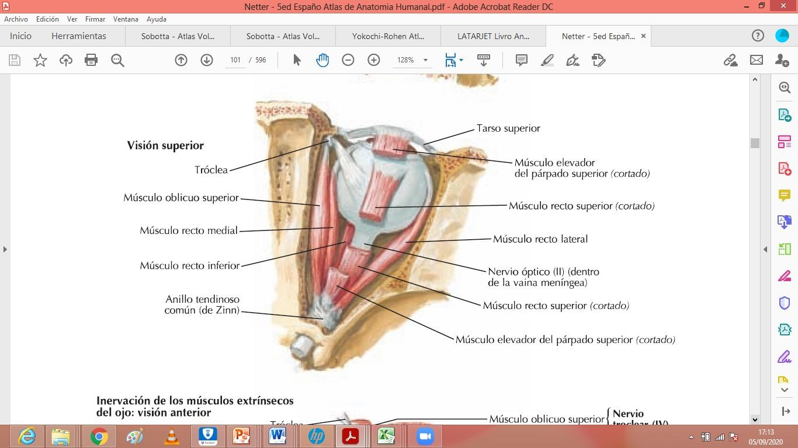
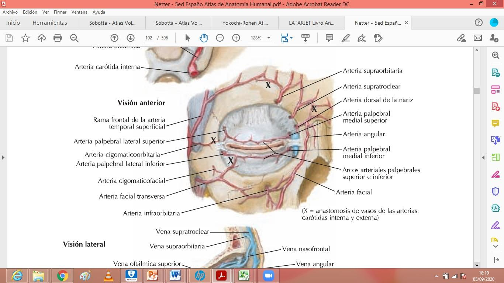
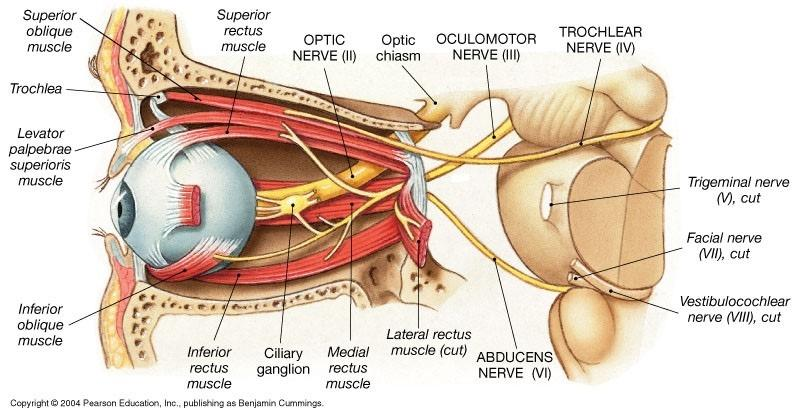

ClinicusMed · Dossiê Clinicus — Padrão de Excelência

| Referência | Descrição |
|---|---|
| Polo Anterior | Transparente, corresponde ao centro da córnea |
| Polo Posterior | Formado pela esclerótica, situado lateralmente em relação ao orifício de entrada do nervo óptico |
| Equador | Círculo maior perpendicular ao eixo do globo, divide-o em 2 metades |

| Camada | Componentes |
|---|---|
| Externa (Fibrosa) | Esclerótica + Córnea |
| Média (Vascular/Úvea) | Coroide + Corpo Ciliar + Íris |
| Interna (Nervosa) | Retina |
| Estrutura | Característica |
|---|---|
| Esclerótica | Periférica, opaca à luz, convexa, resistente, cor branco-azulada. Dá inserção aos músculos motores do olho |
| Córnea | Membrana transparente, encaixada na abertura anterior da esclerótica. Constitui o 1/6 anterior da camada externa |


| Estrutura | Característica |
|---|---|
| Coroide | Membrana mais espessa atrás (4mm) que na frente (3mm), bastante frágil. Face externa convexa, aplicada contra a esclerótica |
| Corpo Ciliar | Interpõe-se entre a coroide e a circunferência da íris. Formação musculovascular: parte anterior (músculo ciliar) + parte posterior vascular (processos ciliares) |
| Íris | Parte mais anterior da camada vascular. Forma de disco vertical, perfurado no centro pela pupila |

| Estrutura | Detalhe |
|---|---|
| Disco Óptico (Papila) | Esbranquiçado, deprimido no centro (escavação do disco). Corresponde à expansão do nervo óptico e chegada dos vasos centrais da retina. É o PONTO CEGO da retina |
| Mácula Lútea | Ocupa o polo posterior do globo ocular — área de maior acuidade visual |

| Estrutura | Característica |
|---|---|
| Cristalino (Lente) | Lente biconvexa, transparente e elástica, situada verticalmente entre a íris (na frente) e o corpo vítreo. Composto por cápsula delgada + fibras em camadas concêntricas. Suspenso pela zônula ciliar (de Zinn) |
| Corpo Vítreo | O mais volumoso dos meios transparentes, ocupa a câmara vítrea. Constituído pelo humor vítreo, envolto pela membrana vítrea (hialóidea) |
| Câmara Anterior | Entre a córnea e a íris |
| Câmara Posterior | Entre a íris e o cristalino |


| Grupo | Músculos |
|---|---|
| Retos (4) | Superior, Inferior, Medial, Lateral |
| Oblíquos (2) | Superior, Inferior |
| Músculo | Ação |
|---|---|
| Reto Lateral | Abdutor (dirige o olho lateralmente) |
| Reto Medial | Adutor (dirige o olho medialmente) |
| Reto Superior | Rotador pra CIMA (ação principal) + adutor + INTORTOR |
| Reto Inferior | Rotador pra BAIXO + adutor + EXTORTOR (antagonista do Reto Superior) |
| Oblíquo Superior | Rotador pra BAIXO + abdutor + INTORTOR |
| Oblíquo Inferior | Rotador pra CIMA + abdutor + EXTORTOR |
| Estrutura | Descrição |
|---|---|
| Sobrancelha (Ceja) | Eminência arqueada pra baixo, provida de pelos. Tem cabeça, corpo e cauda |
| Conjuntiva | Membrana delgada que cobre a parte anterior do globo ocular e as pálpebras. Dividida em conjuntiva ocular e palpebral, unidas pelo saco conjuntival |
| Pálpebras | 2 véus musculomembranosos na frente do globo ocular, podem se tocar ou se separar. A pálpebra superior é mais alta e móvel que a inferior |
| Aparato Lacrimal | Compreende a glândula lacrimal (secreta lágrimas que fluem pela conjuntiva) + vias lacrimais (conduzem as lágrimas até as cavidades nasais) |


| Componente | Descrição |
|---|---|
| Nervo Óptico | Sai do disco óptico, leva a informação visual até o quiasma |
| Quiasma Óptico | Ponto de cruzamento parcial das fibras dos nervos ópticos |
| Tractos Ópticos | Continuam após o quiasma |
| Vias Centrais | Levam até o cuerpo geniculado lateral |
| Centros Corticais | Córtex visual primário |
| Vias de Associação | Conectam com outras áreas corticais |
| Neurônio | Localização |
|---|---|
| 1ª | Neurônio bipolar da retina |
| 2ª | Neurônio ganglionar da retina |
| 3ª | Corpo geniculado lateral |
| 4ª | Córtex visual primário |
Vamos acompanhar um paciente com diplopia súbita, relacionando o caso à anatomia dos músculos extrínsecos do olho. O caso evolui em 3 níveis — clica em cada um pra ver como as coisas vão se desenrolando.
A Clinicus selecionou este conteúdo para complementar seu estudo. Não substitui a leitura do resumo — o resumo ensina, o vídeo reforça.
Carregando recomendações...
O sistema guarda, no seu navegador, quais cards você já sabe bem e quais precisam voltar mais cedo — cada vez que você avalia um card, ele recalcula quando ele deve voltar.
10 questões, do mais básico ao mais puxado. Escolhe uma alternativa, depois clica em "Ver comentário completo" — vale a pena ler até quando você acerta, porque o comentário explica cada alternativa, não só a certa.
Todas as imagens desse capítulo, reunidas num só lugar pra revisão rápida.